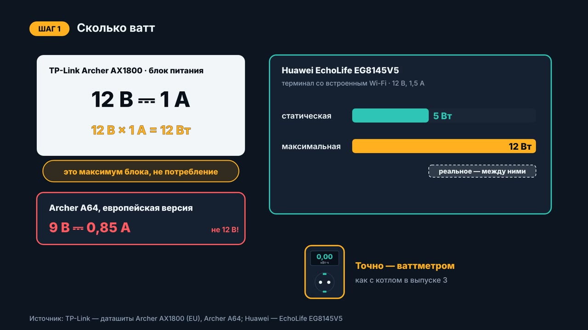
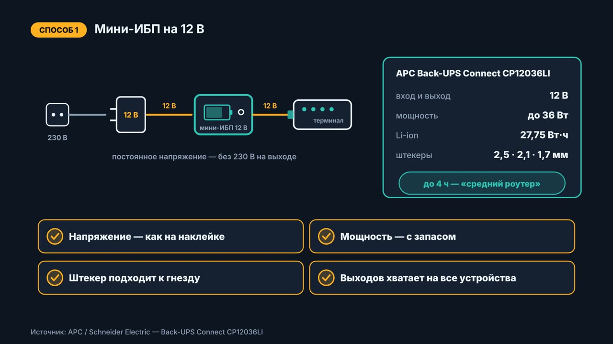

Резервное питание роутера: интернет без света
Роутеру и терминалу провайдера нужно всего несколько ватт, поэтому интернет можно держать часами от небольшого аккумулятора. Разбираем, что именно питать, сколько ватт берёт ваш интернет, какой источник выбрать и как посчитать часы.
Ролик, 6:01. Не открывается? Смотреть на YouTube или читайте разбор ниже — в нём всё то же самое.
Впишите ватты своих устройств и ёмкость источника — калькулятор посчитает часы работы и сколько Вт·ч нужно на ваше отключение.
Открыть калькуляторЧто питать
Обычно интернет в квартире — это два устройства: терминал провайдера и роутер; иногда они в одной коробке. В оптической сети между станцией провайдера и вашим терминалом стоят только пассивные разветвители без питания, поэтому для интернета без света нужно питание у вас дома и резервное питание на станции провайдера. Если интернет приходит по обычному кабелю, в доме обычно стоит оборудование провайдера, и ему тоже нужно питание. Поэтому первым делом спросите провайдера, работает ли его сеть при отключении.

1Сколько ватт
Посмотрите на наклейку блока питания: у TP-Link Archer AX1800 — 12 В, 1 А, то есть до 12 Вт. Это максимум блока, а не потребление. Напряжение бывает разным: у европейской версии Archer A64 блок на 9 В. У терминалов производитель иногда пишет два числа: у Huawei EchoLife EG8145V5 (терминал со встроенным Wi-Fi) статическая мощность 5 Вт, максимальная 12 Вт; реальное потребление — между ними. Точнее всего — измерить ваттметром, как в выпуске 3.

Чем питать: три способа
Мини-ИБП на 12 В
Включается между блоком питания и роутером и отдаёт постоянное напряжение — без 230 В на выходе. Например, APC Back-UPS Connect CP12036LI: вход и выход 12 В, до 36 Вт, литий-ионный аккумулятор на 27,75 Вт·ч, три сменных штекера (2,5 · 2,1 · 1,7 мм); производитель пишет «до 4 часов для среднего роутера». Сверьте напряжение с наклейкой блока питания, мощность — с запасом, штекер — с гнездом, и хватит ли выходов на все устройства.

Power bank
Подойдёт не любой: в правилах USB Power Delivery обязательные напряжения — 5, 9, 15 и 20 В, 12 В в этом списке нет. Кабель-переходник на 12 В заработает, только если power bank умеет выдавать 12 В — ищите это в характеристиках. Ёмкость смотрите в ватт-часах; если указаны только мА·ч — разделите на 1000 и умножьте на напряжение рядом: 20 000 мА·ч × 3,7 В = 74 Вт·ч.
Обычный ИБП или зарядная станция
Работать будет, но расточительно: постоянное напряжение превращается в 230 В, а блок питания роутера снова делает из них 12 В, и на каждом шаге часть энергии уходит в тепло. Плюс инвертор на холостом ходу сам берёт около 8 Вт (выпуск 1) — больше, чем терминал на 5 Вт. Станция уже есть — включите роутер в неё; только ради интернета лучше мини-ИБП на 12 В.
2Сколько часов
Коэффициент 0,8 — из паспорта того же APC: «45 минут при 80 % нагрузки». Это 28,8 Вт × 0,75 ч ≈ 21,6 Вт·ч из 27,75 Вт·ч, около 78 %. Для power bank берём тот же запас. Пример: терминал со встроенным Wi-Fi на 5 Вт — мини-ИБП на 27,75 Вт·ч продержит около 4,4 ч, power bank на 74 Вт·ч — около 12 ч.

Пять ошибок
- Питать только роутер, забыв терминал — Wi-Fi будет, интернета нет.
- 12 В на роутер, которому нужно 9 В. Питайте каждое устройство напряжением с его блока питания.
- Power bank и кабель на 12 В, а power bank 12 В не выдаёт.
- Один роутер на большом ИБП — заметная часть заряда уйдёт на потери.
- Не спросить провайдера — если его сеть без света не работает, аккумулятор будет питать роутер без интернета.
Источники
- Cisco — What Is Passive Optical Networking: разветвители без питания.
- TP-Link Archer AX1800 (EU) — даташит: 12 V/1A.
- TP-Link Archer A64 — даташит: EU-версия 9 V/0.85 A.
- Huawei EchoLife EG8145V5: 12 В, 1,5 А; 5 Вт статическая, 12 Вт максимальная.
- APC Back-UPS Connect CP12036LI: 12 В, 36 Вт, 27,75 Вт·ч, 45 мин при 80 % нагрузки, до 4 ч для среднего роутера.
- Texas Instruments — USB Power Delivery (SLVA782): 5, 9, 15 и 20 В.
- FAA — расчёт ватт-часов.
Проверено 15 ноября 2026 г. Нашли ошибку — напишите в комментариях под роликом.